🌟 Level 24 - Özel Anılarımız
Birlikte geçirdiğimiz güzel anlardan bir seçki...
🤗 İlk Selfiemiz
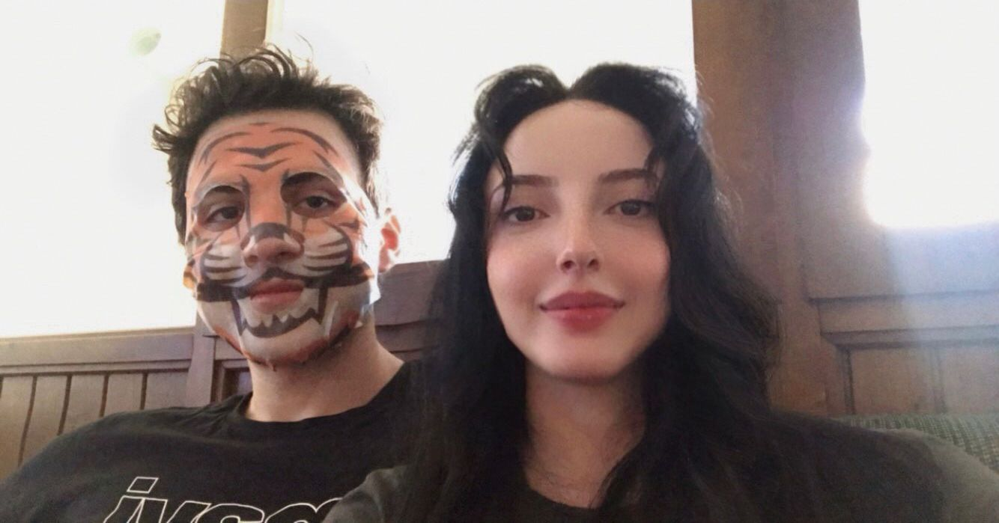Utanarak çektiğimiz o an, şimdi en değerli fotoğrafımız.
🍽️ İlk Yemeğimiz
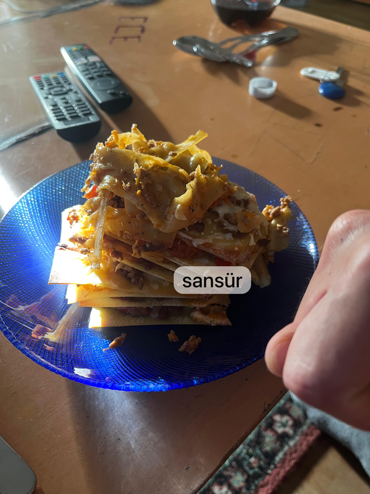lezizo bi kuruluk
🎞️ İlk Filmimiz
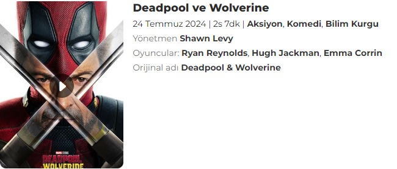minecraft kadar iyi olmasa da .d
🥷 Maske bebek
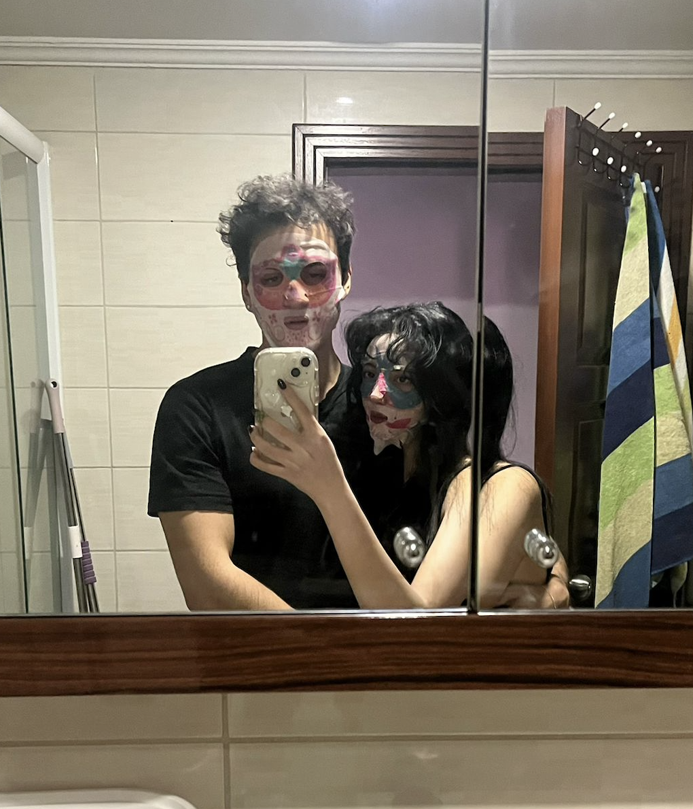yüzü kapali bile yakisikli cildircam allaM
💋 mmmmmmuah
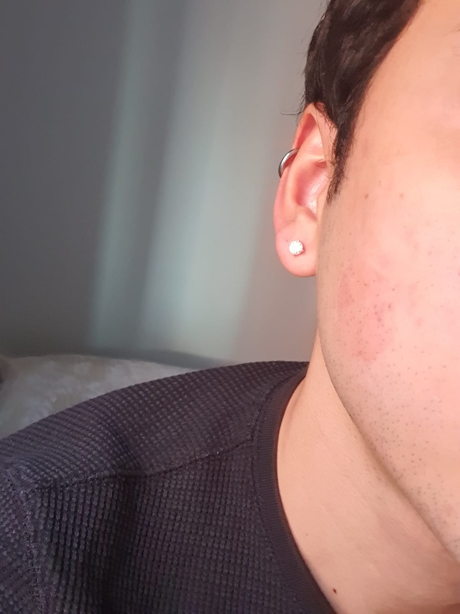tüm gün öpücümle gecmisti canim kocam(habersiz)
💋 öpücük demisken
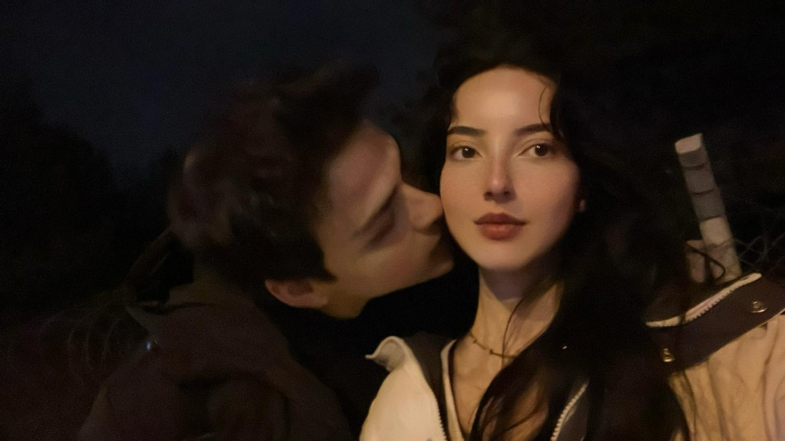öpmeni cok seviyorum
💪🏻 güc gösterisi

abi iğne vuruyo msn (kolunu yerim)(ciddi)
🎭 Sanat fuarı

celal sengör ve benimki
😸 Scratch
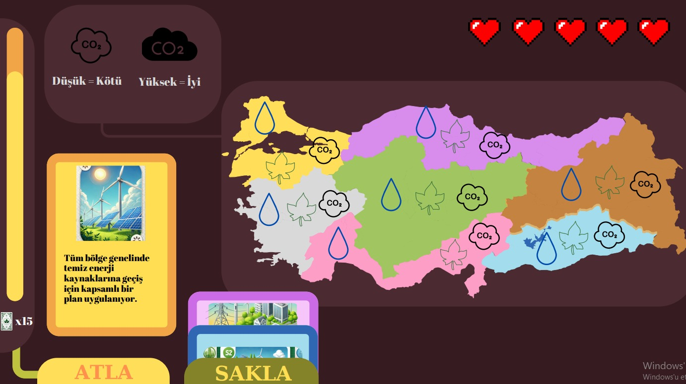buna yer vermezsem olmazdı
🦅 beşiktAŞK
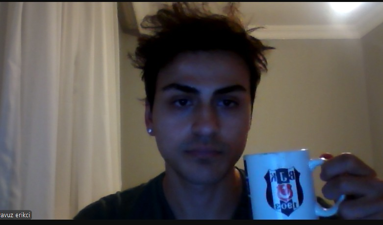cücüksün aşığım
⛏️ En iyi Filmimiz
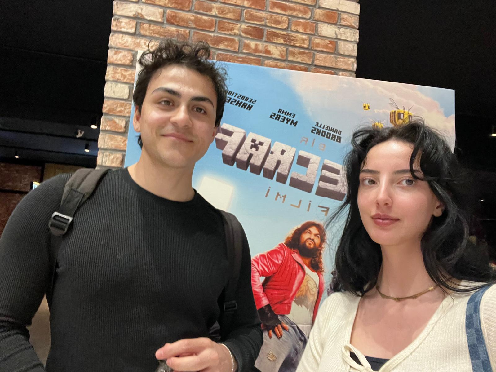Yanımızdaki çocuklar hayatlarının en heyecanlı anını yaşıyor gibiydi, bizse nereye düştük bakışları atıyorduk birbirimize. Sen o filmi ciddiyetle izlemeye çalışırken ben kendimi gülmemek için zor tutuyordum. O saçma film bile güzeldi çünkü sen vardın. Seninle hayat, zaman zaman çocuk filmi gibi anlamsız ama her sahnesiyle izlemeye değer.
🐶 Köpkeler
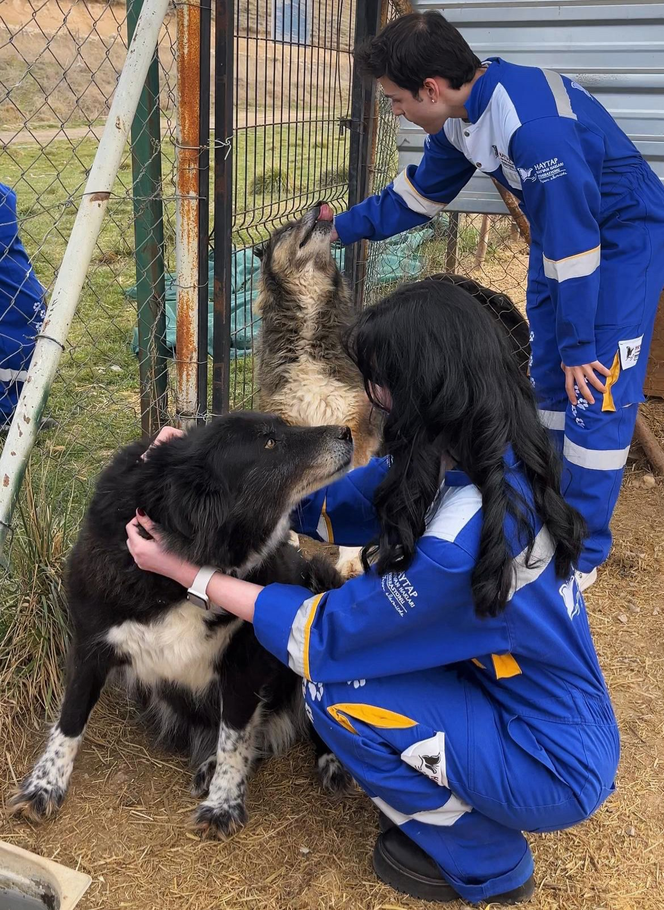manitime köpek bile aşkla bakıyo (bu parantez jübile anısına açılmıştır)
🦛 Kocam ve benzetildiği ünlü

🫶🥹 Bahcede F harfi
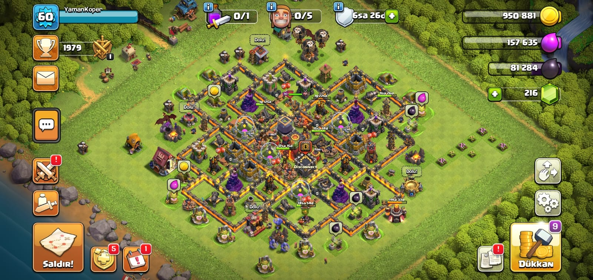ben yaptim ama olsun düstüm....
📿 kekolokko
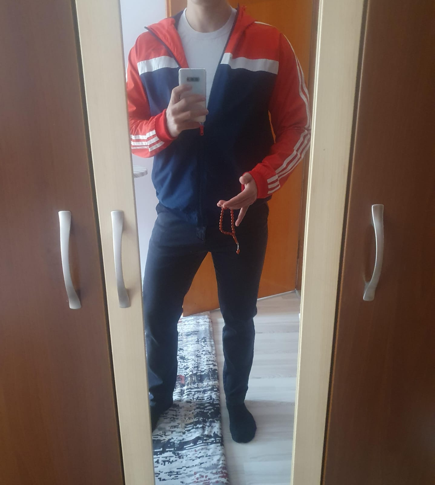her halinle sen <3
🤙 iddia

yine kazandiğim bi iddia
🚴🏻♀️ Bisiklet
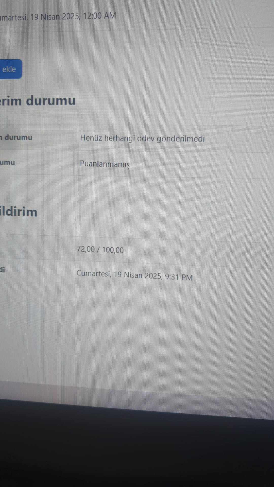buna yer vermezsem olmazdı
❓ Ne renk
yesil or yesil
𓆝 𓆡 𓃠 Hayvanlarimiz


abi iğne vuruyo msn (kolunu yerim)(ciddi)